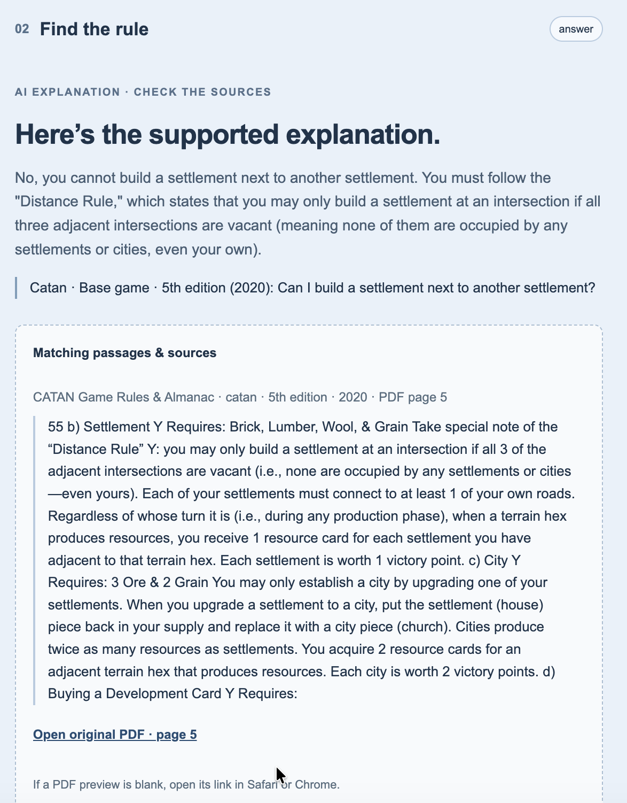

BoardMaster helps players resolve board-game rule questions with concise answers, checkable excerpts, and exact PDF pages shown alongside every result.
6 official PDFsCatan + Seafarers · Chess · Dominion + Dark Ages · Pandemic
01 · THE PROBLEM
Rulebook answers are hard to find when a game is already in motion.
Players often search long PDFs, debate from memory, or accept an answer without knowing where it came from. BoardMaster keeps the source attached to the ruling so the table can verify it.
Scope: written rules from the supported rulebooks. Strategy advice, disputed physical play, and other games are directed to a clear fallback response.
02 · HOW IT WORKS
Evidence first, explanation second.
1
Select the ruleset
The game and edition constrain the search. Expansion searches include the required base rules.
2
Retrieve passages
A local BM25-style keyword retriever searches page-bounded excerpts from the selected official PDFs.
3
Generate with evidence
The course-provided qwen3.8-flash model receives the question and up to six retrieved excerpts.
4
Validate and show sources
The backend rejects unknown citation IDs, then returns the explanation, excerpt, and original PDF page—or a clarification, refusal, or error state.
The example below was produced by the running system for Catan base game. It answers the question, quotes the matching passage, and links to PDF page 5.
Static screenshot · Actual system output · Not interactive

Screenshot summary Question: “Can I build a settlement next to another settlement?” Result: No—the Distance Rule requires all three adjacent intersections to be vacant.
In a 6 November test, the system was asked, “Which resources are required to build one settlement?” It listed the four correct resources but also added an incorrect restriction about trading before building. We narrowed the evidence prompt, reran this question successfully, and then confirmed the fix in the full 12 November evaluation.
BOUNDARY CASE
Knowing when not to answer
For “Should I build a city or a settlement to win?”, BoardMaster explains that it answers written rules rather than strategy. For a request to combine Monopoly rent with Chess castling, it states that Monopoly is outside the selected rulebook instead of producing a mixed ruling.
06 · LIMITATIONS
Current limitations
The evaluation covers 32 predefined questions; more varied user phrasings still need testing.
Keyword retrieval is a lexical baseline; it can miss semantically related passages.
PDF extraction can omit diagrams or symbols and can split sentences at page boundaries.
Exact edition/printing metadata for Pandemic and Dark Ages remains unconfirmed.
The working assistant runs locally and depends on the course API, model access, and shared quota.
Source permissions and provider terms must be checked before broader deployment.
07 · REPRODUCE IT
Run BoardMaster locally.
The app uses Python 3.10+ and the course-provided Alibaba Cloud Bailian key. The key is entered at a hidden prompt and is not saved.